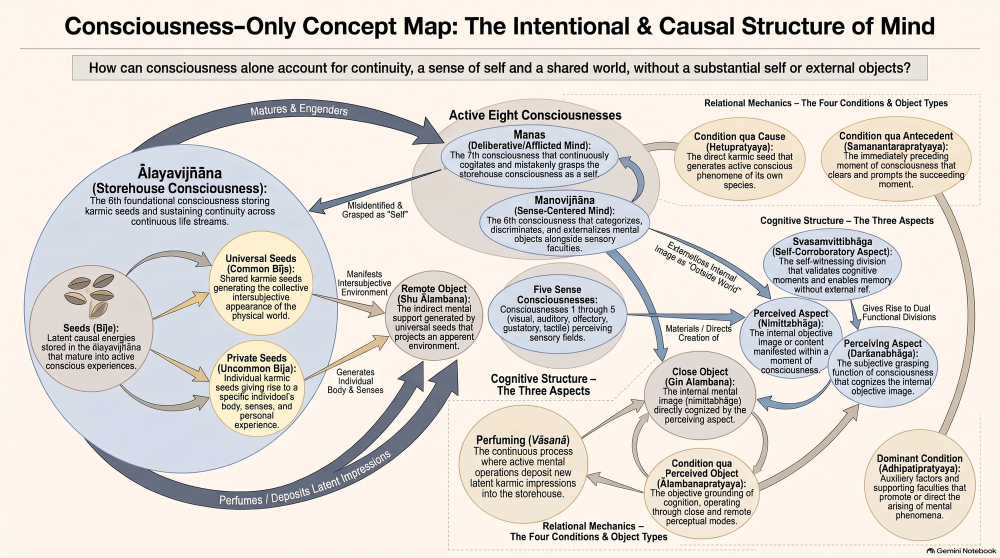
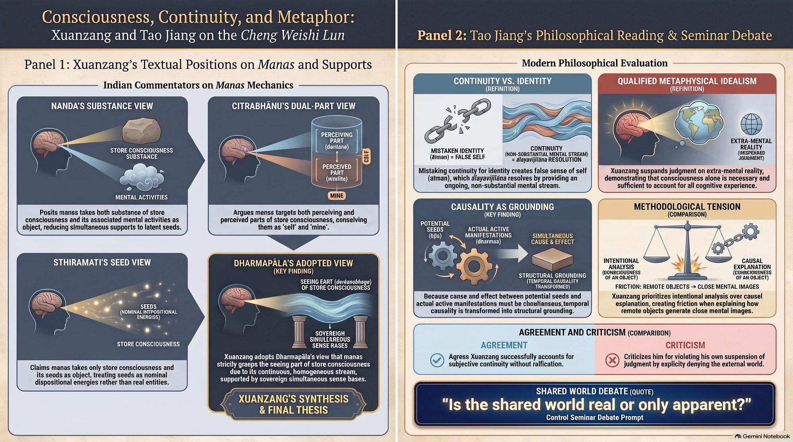
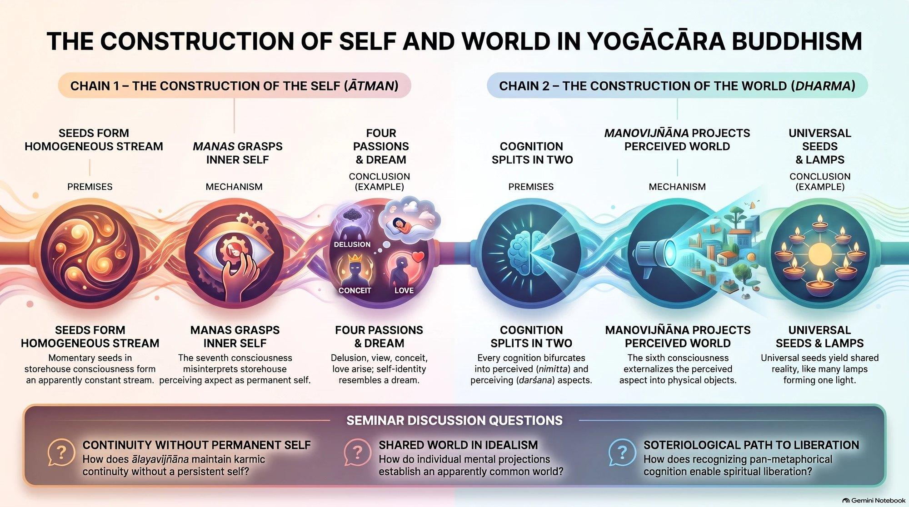

The Classroom · Consciousness in Buddhism · Week 9 · 12 Nov 2026
Later Chinese Yogācāra II: The Intentional Structure of Consciousness
How do you explain continuity, a sense of self and a shared world without a self or external objects? Xuanzang's answer runs through the store consciousness, manas and the six sense consciousnesses, and Tao Jiang reads it as a "qualified metaphysical idealism" that turns causality into grounding, with an unresolved tension between intentional analysis and causal explanation.
1 At a glance 30 seconds
Key questions
- How can Buddhists explain continuity of experience, memory and karma without positing an identical self?
- Why does every moment of consciousness have a perceived and a perceiving aspect, and what grounds them?
- What does manas take as its object, and why does it mistake it for a self?
- If there are no ascertainable external objects, how is a common world experienced?
Key concepts
Ālayavijñāna (store consciousness)
The eighth consciousness: stores seeds, is perfumed by the other consciousnesses, and is what manas attaches to as a self. Morally indeterminate and unveiled, with only indifferent feeling. — Xuanzang, pp. 68–74; Jiang, p. 64
Manas
The seventh consciousness: constantly 'thinks', is supported by the ālaya and takes it as its object, and is always accompanied by four passions: self-delusion, self-view, self-conceit and self-love. — Xuanzang, pp. 113–132
Perceived and perceiving aspects (nimittabhāga, darśanabhāga)
The object-aspect and subject-aspect that every moment of consciousness has within itself; consciousness is 'formed' (sākāra), not a blank receptor. — Jiang, pp. 51–54
Self-corroboratory aspect (svasaṃvittibhāga)
The aspect from which the other two arise; each moment is aware of itself, which makes memory possible. — Jiang, pp. 54–55
Seeds (bīja) and perfuming (vāsanā)
Real potentials in the ālaya that generate actual dharmas and are laid down by them; seed and fruit are simultaneous, seed and next seed successive. — Jiang, pp. 60–63
Qualified metaphysical idealism
Jiang's label for Xuanzang: the realm of consciousness is the world as experienced; whether anything exists outside it is neither affirmed nor denied. — Jiang, pp. 56–57
Close and remote object (ālambanapratyaya)
The close object is inside the perceiving consciousness; the remote object is a non-personal dimension that may or may not exist and is said to 'generate' the close one. — Jiang, pp. 73–75
Tap a concept for its definition.
What you get out of it
- Identity is continuity misidentified: the ālaya is 'neither permanent nor impermanent', a stream 'like a torrent'.
- Causality becomes grounding: the potential (seed) grounds the actual (dharma) at the same moment.
- The self is produced from below: manas grasps the seeing part of the ālaya, a homogeneous stream, as a constant inner self.
- Xuanzang privileges intentional analysis (consciousness is of an object) over causal explanation (consciousness is caused by an object), but does not fully reconcile them.
Cases and evidence
- Dreams and misperception Jiang (2006)
Experience of objects without external counterparts: manovijñāna alone can create the sense of externality, as in a dream. - Many lamps, one light Xuanzang via Jiang
Many consciousnesses manifesting similar things appear as one common world; Jiang reads the commonness as apparent rather than real. - The candle-wick Xuanzang via Jiang
Seeds, the consciousness they produce, and the new seeds it perfumes cause each other like wick and flame. - Hearing a sound in samādhi Xuanzang, pp. 156–157
Auditory consciousness can arise alongside good meditative mental consciousness, so the six consciousnesses need not share one moral nature.
The readings
| Xuanzang (1999) | Demonstration of Consciousness Only (trans. Cook) · pp. 68–74, 113–114, 123–132, 153–157 The store consciousness, manas and the six sense consciousnesses, argued against Nanda, Citrabhānu and Sthiramati before Dharmapāla's view is adopted. |
| Tao Jiang (2006) | Ālayavijñāna in the Cheng Weishi Lun: A Buddhist Theory of the Subliminal Mind · pp. 48–86 Xuanzang largely succeeds in explaining the self and experience as a subliminal continuum without reification, at the cost of some tensions. |
Where this fits in the course
Last week introduced Xuanzang's store consciousness (ālayavijñāna, pp. 47–68) as the seed-bearing ground of experience, after Vasubandhu's Thirty Verses (Week 5) and Paramārtha's earlier model (Week 6). This week looks at how the eight consciousnesses are structured and related: what the store consciousness is associated with, how manas mistakes it for a self, and how the six sense consciousnesses perceive objects. Jiang's reading of the perceived and perceiving aspects and of the 'remote object' sets up Week 10 on a shared world and Week 11 on illusionism.
- 1Buddhist Philosophy of Consciousness in its Historical Context
- 2Consciousness as Dharma: Abhidharma Taxonomy in the Kośa
- 3Sarvāstivāda Epistemology: Does the Eye See?
- 4Sarvāstivāda Metaphysics: Temporality
- 5The Yogācāra Refutation of Early Buddhist Realism
- 6Early Chinese Yogācāra I: Paramārtha's Philosophy of Mind
- 7Early Chinese Yogācāra II: Consciousness and Tathāgatagarbha
- 8Later Chinese Yogācāra I: Redefining Consciousness
- 9Later Chinese Yogācāra II: Intentional Structure of Consciousness
- 10Reframing the Idealism Debate I: A Shared World
- 11Reframing the Idealism Debate II: Buddhist Illusionism
- 12Yogācāra in Modernity: Humanistic Buddhism
- 13Yogācāra in Modernity: Gendering Buddhist Modernism
2 Look



3 Test your understanding
4 quick questions, then 2 to answer in your own words. Nothing is saved or sent.
Why is the store consciousness associated only with the feeling of indifference?
It evolves from past karma without depending on present conditions; if it varied with pleasure and pain it could not be grasped as a changeless self (pp. 71–72).
On Dharmapāla's view, adopted by Xuanzang, what does manas take as its object?
Nanda, Citrabhānu and Sthiramati are rejected; manas grasps only the seeing part, a homogeneous stream that looks constant (pp. 128–130).
What does Jiang mean by calling Xuanzang a 'qualified metaphysical idealist'?
Real ātman and dharmas 'cannot be ascertained', and positing them adds nothing to explaining cognition (pp. 56–57).
According to Jiang, how does the simultaneity of seed and fruit change causality?
Seed and dharma are simultaneous, seed and seed successive, so causation between dharmas is mediated by seeds and becomes grounding (pp. 62–63).
Explain Jiang's 'tension' between intentional analysis and causal explanation in Xuanzang's account of the remote object.
Xuanzang says consciousness may or may not have a remote object but always has a close one, which fits an intentional analysis where the real object is not necessary. Yet he also says the remote object produces the close one, a causal explanation that makes it necessary. Jiang thinks Xuanzang privileges the intentional analysis and resolves the issue by tracing the sense of a remote object to manovijñāna's externalising activity.
How does Xuanzang account for a shared world, and how convincing is it on Jiang's reading?
Universal seeds in each ālaya manifest as a receptacle world that many beings experience alike, like many lamps giving one light, while private seeds give each their own body and senses. Jiang reads this as an apparent, not a real, commonness constituted by a community of private consciousnesses, which leaves the question for Week 10: is the shared world real or only apparent?
Podcasts and infographics are generated with Google NotebookLM from the course readings; the brief and quiz are drafted with Claude from the readings and syllabus. Everything is checked and curated by me.